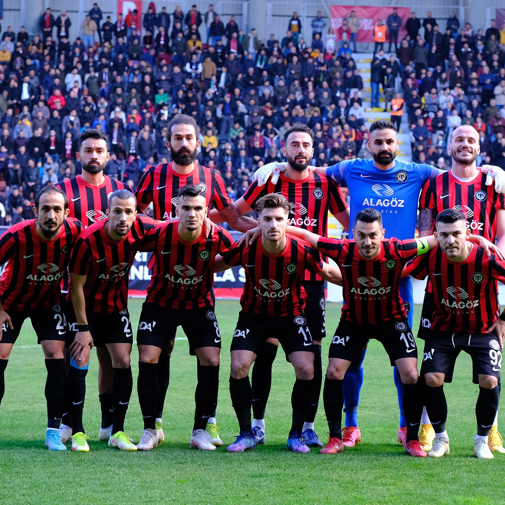

Mirasımız

Çorum Futbol Kulübü, 2019 yılında kurulmuş genç bir kulüp olmasına rağmen, köklü bir futbol kültürünün temsilcisidir. Kırmızı-siyah renklere sahip olan takım, taraftarının coşkulu desteğiyle kısa sürede başarılar elde etmiş ve 1. Lig'e yükselerek adını duyurmuştur. Çorum şehrinin spora olan ilgisini sahaya yansıtan kulüp, altyapıya verdiği önem ve mücadeleci ruhuyla dikkat çeker.
Çorum FK, sadece sahadaki performansıyla değil, aynı zamanda şehirle kurduğu güçlü bağlarla da ön plana çıkar. Modern tesisleri, profesyonel yönetim yapısı ve gelecek hedefleriyle Türk futbolunun yükselen değerlerinden biridir.
